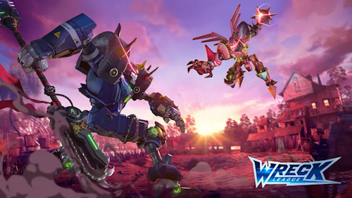
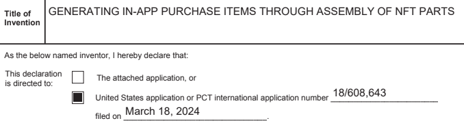

WRECK LEAGUE
Wreck League is a AA mobile fighting game featuring fast-paced PvP combat, deep customization systems, and PC crossplay.
- Website: wreckleague.xyz
- Overview: "What is Wreck League?"
I was Lead Designer on this project from initial concept through release. I managed a team of designers and was the vision holder for character customization systems and NFT integration.
- Role: Lead Designer
- Platforms: iOS/Android, PC
- Tools: Unity, Google Sheets/Docs, Snowflake, Amplitude
- Team size: 60+
Responsibilities
- Led design team to create fast-paced mobile PvP combat and fighting game meta progression systems
- 2x Lead Designers
- 3x Combat Designers
- 1x Systems Designer
- Spearheaded NFT customization system supporting 1m+ NFTs and tracking an active inventory of 400k+ NFTs
- Designed core game systems such as matchmaking, character progression, combat stats, etc.
- Coordinated joint development with overseas partner studio
- Planned studio roadmap and project schedule as part of studio leadership team
Highlights
Community Development
This is a video of our first alpha playtest with roughly a dozen Web3 content creators. We got some great feedback that we later incorporated into our beta release builds.
We embraced this type of community-driven development from day one. My designers were regulars in our Discord and solicited feedback by chatting and playing with the community. This allowed us to anticipate meta shifts and iterate on combat balance changes more rapidly than if we'd relied on traditional Community Management-driven interaction.
Patent Co-Inventor
Wreck League was designed so there would be separate NFT (paid) and F2P versions of the game. We patented an innovative store system that would let NFT owners use a rare tournament currency to 'publish' non-NFT copies of their mechs to the F2P game store so F2P players could spend money on them. We would then take a small % cut of each transaction.
Rather than the traditional F2P model of developers selling content to players, this would instead create a UGC ecosystem where value flows primarily between players rather than directly from/to the developer.
It would be a win-win: we would provide tools and base content to NFT players, and NFT players would be incentivized to provide customized content to F2P players and shape the metagame.
From the Wreck League project overview:
The F2P version of Wreck League is designed for wider accessibility and enjoyment. This version of the game can be downloaded and played by anyone, without the need for mech NFT ownership, and follows a Free-to-Play model common in mobile and PC gaming. But, what sets Wreck League apart is its in-game store, which will be populated by mechs created by the mech NFT owners. Essentially, mech NFT owners can create off-chain copies of their mechs as In-App-Purchase (IAP) options that are not NFTs. These user-created mechs will populate the in-game store, providing players with a wide array of mech options to enhance their gameplay experience. When a gamer purchases one of these mechs, a portion of the revenue generated will be shared with the NFT creator/owner, fostering a community-driven economy within the game.